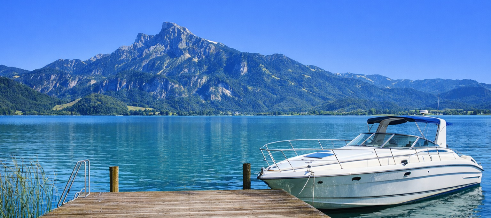

7. Mondsee
47.806036, 13.439962

A Mondsee tó és az azonos nevű kisváros a Salzkammergut nyugati kapuja. A tó kb. 14 km² felületű,
legnagyobb mélysége 68 m. A tómeder egykori gleccser vájta teknő, amely a jégkorszak végén telt fel
vízzel. A víz jellegzetes türkiz színét a finom, lebegő mésziszap és a környező mészkőhegységek
ásványi anyagai adják.
A Mondsee környéke geológiailag is izgalmas: a tó a Dachstein-mészkő és a Werfen-formáció határán
fekszik, ezért a part mentén jól megfigyelhetők a réteges üledékes kőzetek, valamint a jég által
csiszolt felszínek. A tó hőmérséklete nyáron akár 25–27 °C-ig is felmelegedhet, ami a régió egyik
legmelegebb alpesi tavává teszi.
A város legismertebb épülete a korábbi bencés apátság és a Szent Mihály-bazilika. A templom barokk
belső tere és a két tornyos homlokzat ikonikus látvány. A hely világhírét tovább növelte, hogy a
The Sound of Music című film esküvői jelenetét itt forgatták – emiatt évente több tízezer rajongó
keresi fel.
Régészetileg a Mondsee különösen fontos: innen kapta nevét a Mondsee-kultúra, egy késő neolitikus
civilizáció, amely kb. i. e. 3800–2800 között élt a tóparton. A cölöplakások maradványai a tó
sekélyebb részein ma is megtalálhatók, és az UNESCO világörökségi sorozat részét képezik. A
feltárások során kőeszközök, csiszolt balták, kerámiák és korai fémmunkák nyomai kerültek elő.
A tó élővilága is különleges: él itt a ritka seesaibling (alpesi pisztráng), valamint több védett
madárfaj, például a jégmadár és a szürke gém. A tóparti nádasok fontos ívóhelyek és
madárvonulási pihenőpontok. A Mondsee klímája enyhébb, mint a környező hegyvidéké, ezért a
vegetáció is változatosabb.
A Mondsee egyszerre tóparti üdülőhely, történelmi városmag, régészeti lelőhely és természeti
különlegesség. A tó és a város együttese a Salzkammergut egyik legjobban dokumentált és
legváltozatosabb területe.